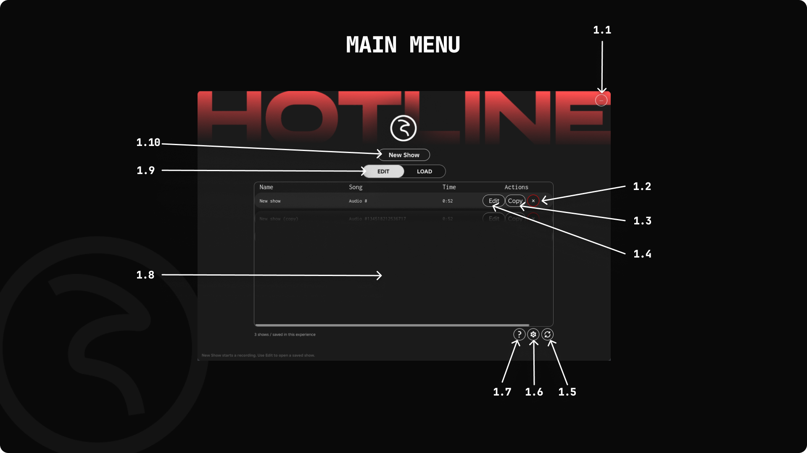
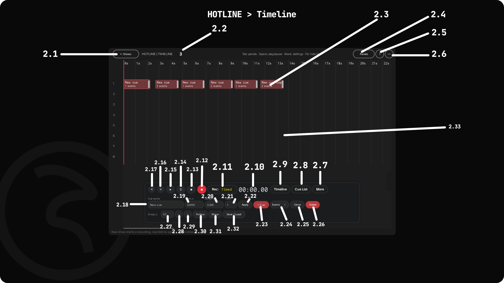

HOTLINE — interface and controls
For version 0.13.10. Numbers match the updated illustrations. The timeline image shows the full Edit toolbar.
1. Main menu

| No. | Control | Description |
|---|---|---|
| 1.1 | Minimize | Hides the window without stopping playback or recording. Use F6 or the GUI toggle to show it again. |
| 1.2 | Delete / × | Deletes the saved show after confirmation. |
| 1.3 | Copy | Creates a separate copy of the saved show. |
| 1.4 | Edit / Load | In Edit mode, opens the show for editing. In Load mode, loads it for playback: a linked Sound arms the show until that Sound starts; otherwise playback starts immediately. |
| 1.5 | Refresh | Refreshes the saved-show list. |
| 1.6 | Settings | Opens local volume and Snap settings, with access to keybindings. |
| 1.7 | About | Shows HOTLINE information, documentation and support contacts. |
| 1.8 | Show list | Name is the show name; Song is the song label; Time is the derived show duration; Actions contains show controls. Time is not a recording limit. |
| 1.9 | EDIT / LOAD | Selects how saved shows are opened. Edit supports creation and editing; Load provides playback without editing. |
| 1.10 | New Show | Creates a show with optional Audio ID, song label, speed, volume and waveform image. Music is optional. Open timeline opens the editor; Start recording creates the first cue and starts the selected recording mode. Available in Edit. |
2. Timeline and Edit toolbar

| No. | Control | Description |
|---|---|---|
| 2.1 | Timeline | The cue and track workspace. Click an empty area to position the cursor. In Edit, drag cues to move them or drag their right edge to resize them; editing is blocked during active recording. |
| 2.2 | ← Shows | Returns to the main menu. Internal playback or recording is paused; an external Sound is not automatically stopped. |
| 2.3 | Undo | Reverts the latest editor change in the current session. |
| 2.4 | Redo | Reapplies an undone change. |
| 2.5 | Play | Starts or resumes playback. After the internal track ends, Play restarts it. With a linked Sound, it controls that Sound. |
| 2.6 | Pause | Pauses playback. During recording, finishes the take; an armed Capture with no received command is cancelled. |
| 2.7 | Stop | Stops playback, returns the cursor to the beginning and resets the involved fixtures. A linked Sound is stopped too. |
| 2.8 | Record cue | Starts recording into the selected cue. Create or select a cue first. During recording, a finish-recording button appears in its place. |
| 2.9 | Rec: Timed / Capture | Timed advances the timeline and preserves command timing. Capture keeps the cursor stationary, waits for the first supported GLights command, records it at offset 0 and finishes recording. |
| 2.10 | Timecode | Shows the current playback position in minutes and seconds. |
| 2.11 | Timeline | Switches the workspace to the timeline view. |
| 2.12 | Cue List | Opens the command list with expandable groups. Switching views does not change cue data or execution order. |
| 2.13 | More | Shows or hides the additional tools in the bottom toolbar row. |
| 2.14 | Panels | Shows or hides the toolbar to free workspace area. Default shortcut: Tab. |
| 2.15 | Layouts 1–4 | Cycles through Large, Wide, Tall and Compact. Defaults: Ctrl+1 through Ctrl+4. |
| 2.16 | Minimize | Hides the window without stopping the show or recording. |
| 2.17 | Cue name | The selected cue name. Rename it by finishing input / leaving the field, or by pressing Apply. |
| 2.18 | Start, s | The selected cue start time, in seconds from the beginning of the show. Apply the change with Apply. |
| 2.19 | Length, s | The selected cue duration in seconds. Apply the change with Apply. |
| 2.20 | Track | The selected cue track number. Apply the change with Apply. |
| 2.21 | Apply | Applies the selected cue name, start time, duration and track fields. |
| 2.22 | + Cue | Creates a cue at the cursor on the first free track. If existing tracks are occupied for that interval, the next track is used within MaxTracks. |
| 2.23 | Events | Opens the selected cue commands: offset, GLights fixture group, command and arguments. The number is the event count. |
| 2.24 | Clone | Duplicates the selected cue or selection while preserving relative offsets. |
| 2.25 | Delete | Removes selected cues from the current show. Undo can revert this editor change. |
| 2.26 | Snap, s | The snapping interval for cursor and cue movement. Set 0 to disable snapping. |
| 2.27 | − | Zooms out horizontally. |
| 2.28 | + | Zooms in horizontally. |
| 2.29 | Follow | Toggles smooth following: the playhead in Timeline and the current position in Cue List. Also available on the compact Load toolbar. |
| 2.30 | Show | Show settings: name, speed, track volume 0–10, Audio ID, waveform image, song label and Append / Replace recording policy. |
| 2.31 | Save / Load | Saves or loads a show by slot. Pause playback and finish recording first. This is the storage dialog, separate from the main-menu Load mode. |
| 2.32 | Group | Combines at least two selected cues into one group while preserving command timing. Default: Ctrl+G. |
| 2.33 | Ungroup | Ungroups the selected groups. New groups restore their component cues. Default: Ctrl+U. |
| 2.34 | Color | Sets selected cue colors using a palette or RGB HEX. The color is saved with the show and affects the interface, not the fixtures. |
| 2.35 | + Track | Adds a track manually within MaxTracks. The default limit is 128; eight tracks are not a fixed maximum. |
| 2.36 | Keys | Opens shortcut customization, saving and reset controls. Bindings are user preferences and do not alter show commands. |
Load toolbar
In Load mode, the compact top-center toolbar contains Play, Pause, Stop, Edit, Follow, the timecode and Timeline / Cue List switches. Cue fields, recording, Undo/Redo and editing tools are hidden. Edit stops playback and restores the full editing toolbar.
Follow shows ON / OFF. Its state is shared between Edit and Load.
Report a bug
Telegram: @hoomlion. Discord: hoomlion.